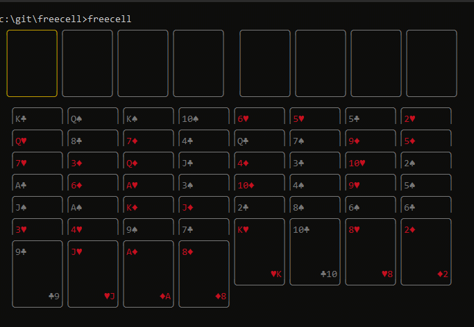

Projeto
Freecell
Um implementação do famoso jogo Freecell para o terminal, feito com React e Ink.
Sobre o projeto
Fiz esse projeto em 2020 como um exercício de interface no terminal, desenhando cartas em ASCII, com navegação pelas setas e seleção com Enter ou espaço fara jogar o famoso Freecell.
O ano agora é 2026 e esse tipo de projeto é trivial de se fazer com os avanços mais recentes de IA.
Ainda mantenho aqui essa página, para que continue na memória de projetos passados.
Para exemplo de comparação, abaixo está um clone web do projeto, criado em alguns minutos com uma IA gratuita.
Para jogar a versão do terminal, basta rodar o comando abaixo.
npx freecellRequer Node.js 18 ou superior. O código, os testes e as instruções completas estão no repositório do projeto.

Use as setas ← ↑ → ↓ para navegar, Enter ou espaço para selecionar e mover, e Esc para cancelar. Ctrl+Z (ou ⌘+Z) desfaz o último movimento. Também funciona clicando nas cartas.
Como jogar Freecell
- Leve todas as 52 cartas para as quatro fundações, uma por naipe, do ás ao rei.
- Na mesa, as cartas descem em sequência e alternando as cores (vermelho e preto).
- Use as quatro células livres no topo como espaço temporário.
- Sequências inteiras podem ser movidas se houver células livres e colunas vazias suficientes.
- Cartas nas fundações não podem voltar para a mesa.